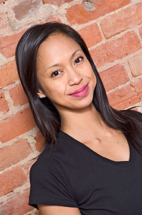
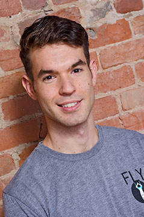
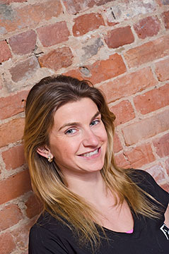
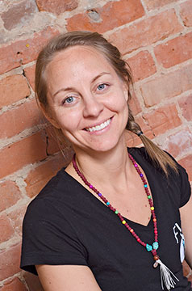
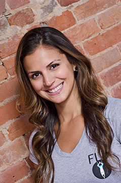

At FLY Studio our mission is to create an oasis in Toronto's Downtown Core that will offer you an environment to make positive changes to your body and mind through a unique variety of practises. We focus on taking your practise to new levels with the addition of the suspension element - when gravity does hold you back, you can literally soar. The practise may be new to you but our small classes will give you the opportunity to work with our instructors closely to ensure the festest possible progress. No matter what your goals are, the combination of classes that are available at Fly Studio will get you where you want to be - come and see us today and you will see why
Everyone is drawn to yoga for different reasons and I love being a part of that journey. Yoga entered my life in 2006 thanks to Tracy + Jose Dos Anjos who opened Moksha Downtown in Toronto. It was there I took classes until it became my favourite “me time” activity. When I completed the Yoga Teacher Training with Balanced Life Yoga, I was excited to learn more. To date, I've been certified to teach Aerial and Pre + Post Natal Yoga. The practice of yoga is often misinterpreted. You don't have to be "bendy" and you don't have to be a zen master to stay focused during a class. All it takes is a commitment - just as it is with any sort of training. Once you become connected to your practice, be prepared to fall in love with your inner self. Forever grateful for the teachers that inspired me on my yogic path: Shasta Townsend, Angela Ryan, Krista Bromfield, Shawna Fujijki, Laura Avard, Suzanne Hennig, Sydnie Nicoll, Lisa Barkin, David Good and Carmen Puyo.
Yoga came into my life while I was still a busy university student in Vancouver, BC. I had been longing to find balance amongst my many interests and yoga was the practice that brought unification, and started me on a new path. After graduation I became more serious about my practice and in 2009 I completed my yoga teacher training at Prana Yoga College and have been teaching ever since. My dedication has granted me the opportunity to teach in many places and many styles. In addition to my exploration in yoga I decided to pursue a career in contemporary dance, a dream I always had. I enrolled in Simon Fraser University's post-bachelors diploma in contemporary dance where I spent 3 years furthering my knowledge of alignment, anatomy, injury prevention, bio-mechanics and physiology. In 2011 I became a certified Pilates instructor through the PhysicalMind Institute of Canada and recently I received my aerial yoga certification through P3 Yoga in Pickering, ON.
Balance is what keeps me happy in my life. Regular yoga practice has become a very important part in finding that balance by making me feel calm, grounded and motivated. I chose to become a yoga instructor so I could share this positive experience with people; encouraging them to feel good about moving their bodies and showing them how to release the tension that builds up in the daily grind. When I completed my teacher training in CorYoga, I became interested in anti-gravity yoga practice and completed teacher training in suspension yoga. Using the sling and the handles adds to your yoga practice experience off the floor. Suspension yoga will increase your body awareness, build balance and coordination, and release muscular tension as well as strengthen and tone your entire body. Be prepared to fly!
Lori began her yogic journey shortly after completing her Psychology Degree in 2005 and became certified to teach in 2009. Her passion for healing has guided her to attunements and trainings in several different healing modalities including Reiki, Reconnective healing and Theta healing™. She is also certified as a traditional Thai masseuse, is an Unatta® Aerial yoga teacher and is currently studying Eastern medicine to become an acupuncturist. Lori believes that personal growth is at the heart of yoga practice and therefore it is her goal as a facilitator to create a safe space for such cultivation. As an avid traveler, and an aspiring artist Lori receives inspiration from life experiences and thus is a strong advocate for living life in our highest potential. In her eyes all it takes is a sense of innocence and pliability for the generation of limitless possibilities because we are always on a path of continual change and progression. Lori welcomes you to come embark on this unknown journey with her to embrace and allow things to unfold from a place of love and compassion for yourself and others.
Lia's passion for movement began as a child when she practiced gymnastics and continued through years of dance. She was immediately hooked on Pilates after taking her first class. After a year of dedicated practice, Lia decided to pursue training to share the benefits of Pilates that she had experienced. Lia obtained certification to teach Pilates Mat from Body Harmonics in Toronto. Her approach to Pilates maintains that the exercises practiced are the vehicle which drive us towards increased mental and physical awareness, improved mobility, and strength. Her encouraging teaching style and keen eye for movement help clients improve their body awareness and alignment. She enjoys creating unique exercise modifications to promote greater ease of movement and healthy biomechanics. Lia is inspired by the changes she sees in front of her as she watches people build strength and make health a priority. Lia is dedicated to personalizing exercise programs to help each client reach their full potential in the studio and carry those skills over to everyday activities and sports. Pilates aside, when Lia isn't working you can probably find her travelling, diving, and trying new restaurants.
Katherine brings a decade of training and teaching to the Body Conditioning programs at Fly. Her career as a Can Fit Pro Personal Trainer and fitness instructor spans 10 years, 4 provinces and an incredibly diverse range of clientele and fitness modalities. Thanks to the unique space, equipment and attitude at Fly, Katherine gets to do what she does best- teach creative, smart, tough classes with a down-to-earth, personal approach.
Natalie has been a life long fitness enthusiast. As a child, she was a competitive gymnast and became passionate about pilates shortly after. She completed her Pilates Mat Certification through Stott in 2007 and went on to complete her full certification with Pilates Academy International in New York City in 2008. Her passion for health and wellness led her to pursue a career in teaching pilates. She enjoys giving her clients new and creative exercises to reconnect with their bodies in ways they have never done previously. She is currently studying Chinese Medicine and Acupuncture with hopes of bringing even more balance and harmony to the health of her clients.
Q: Do I need experience in suspension or aerial yoga before I take a class?
A: Absolutely not, when you meet your instructor you will discuss your experience level and movements can be tailored to suit your needs. As your experience grows, so will the level of difficult of the class.
Q: What is the difference between suspension and aerial yoga?
A: At first look, the most notable difference is the equipment we use. For aerial yoga we use a silk hammock and for suspension yoga we use a hammock made of recycled parachute material that also has handles for the hands and feet. The movements in the aerial class are predominantly Asana yoga which can be taken to another level because of the assistance of the silk. The suspension class is a blend of yoga, body conditioning and stretching. The handles are there for extra stability and a deeper stretch. Don't worry about picking a favourite on your first day, our package pricing is set up so you can buy a 5 or 10 pack of classes that works for both.
Q: What do I wear?
A: Whether you are upside down or on the reformer, comfortable clothing that moves with you is good for all of our classes. Shoes are optional for Tabata, but unnecessary for the rest of our classes. Jewelry has a bad habit of getting caught on our suspension and aerial equipment so we ask that you don't wear it during your class.
Q: Why should I try suspension or aerial yoga and what benefits can I hope to see?
A: There are so many reasons, but here are a few...
Q: Can I join a group reformer class with no experience?
A: We recommend taking at least three beginner reformer classes or a 4 week workshop before joining any of our open level reformer classes. This will give you the knowledge and confidence to make the class enjoyable and beneficial. Contact us for details on our next beginner workshop.